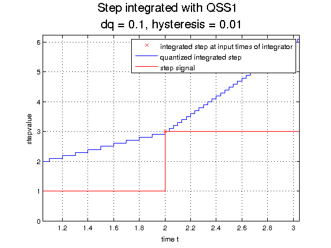

Plot for QSS1 Step Test Example
Plots the q-trajectory of an integrated step and the step itself.
Contents
Call: plot_step_qss1(root_model,tstart,tend,T,v,dq,epsilon). T and v are the step parameters (times and values). dq and epsilon of integrator are passed, because we plot the trajectory and would like to have some information in the legend.
File: DEVSPATH/02-examples/discrete/steps-qss/plot_step_qss1.m

function plot_step_qss1(root_model,tstart,tend)
% get some system parameters for figure titles and plot of the step % signal dq = root_model.components.integrator1.sysparams.dq; epsilon = root_model.components.integrator1.sysparams.epsilon; T = root_model.components.step.sysparams.T; v = root_model.components.step.sysparams.v;
Plot via Manually Tracked States
figure('name','Plot steptest qss1 via manually tracked states','NumberTitle','off') plot(root_model.components.integrator1.s.traj(:,1),root_model.components.integrator1.s.traj(:,2),'rx') hold on grid on stairs(root_model.components.integrator1.s.qtraj(:,1),root_model.components.integrator1.s.qtraj(:,2)) title(['Step integrated with QSS1 \newline dq = ',num2str(dq),', hysteresis = ',num2str(epsilon)],'FontSize',16); xlabel('time t'); legend 'integrated step at input times of integrator' 'quantized integrated step' hold on hold off x=([tstart:0.1:T(2),T(2):0.1:tend]); y_before= ones(1,length(tstart:0.1:T(2)))*v(1); y_after= ones(1,length(T(2):0.1:tend))*v(2); hold on plot(x,[y_before,y_after],'r'); legend 'integrated step at input times of integrator' 'quantized integrated step' 'step signal'; plot([tstart tend],[0 0]); % zero line hold off
Plot with the Observe Functionality
prerequisite: set observe_flag to 1 before simulation
figure('name','Plot step via observed states','NumberTitle','off'); integrator1_t_values = [root_model.components.integrator1.observed{:,1}]; integrator1_states = [root_model.components.integrator1.observed{:,2}]; integrator1_X = [integrator1_states.X]; integrator1_q = [integrator1_states.q]; plot(integrator1_t_values,integrator1_X,'rx'); hold on grid on stairs(integrator1_t_values,integrator1_q); plot(x,[y_before,y_after],'r'); title(['Step integrated with QSS1 \newline dq = ',num2str(dq),', hysteresis = ',num2str(epsilon)],'FontSize',16); xlabel('time t'); legend 's.X' 's.q' 'step signal';
end
DEVS Tbx Home Examples Modelbase << Back